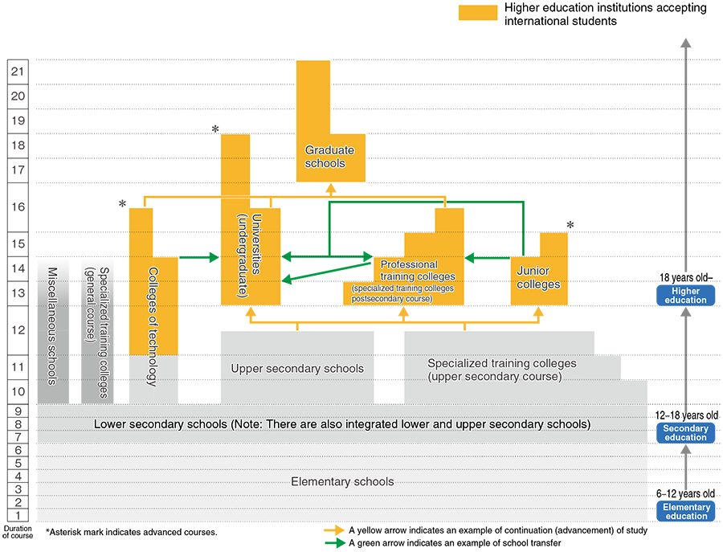

Why Study in Japan from Nepal?
Japan is the third largest economy of the world, glory of discoveries of cutting-edge technology with diverse landscape, loaded nature and beautiful seasons.
It is an island nation of East Asia; its democracy is stable compared to other world economies.
It consists of approx 120 million people with half per capita of G7 citizens.
Japan universities have world class research facilities.
It has hub of cultural powerhouse that introduces exported technology culture and more around the world.
With the globalization scheme, Japanese government encourages to accept more foreign students for higher education in Japan.
The tuition and living expenses are considerably more affordable than other countries.
Foreign students not only can learn Japanese language but also can learn about the culture, tradition and high technology of Japan.
The encouraging academic environment, top notch infrastructure, and top-quality education and institutions captivate students from worldwide.
Here are some points to show how Japan is suitable for study:
- Study in Japan will prepare you for a future career in global business.
- Japanese language study can build a strong foundation for graduate work in a range of fields.
- You will have the opportunity to study away or work in Japan.
- Studying in the Japan helped students not only to improve Japanese skills but also to become more of a global citizen.
- The Japanese curriculum is closely integrated with the study of Asia.
- Tuition fees at Japanese universities are significantly less than many other countries.
- Japanese expertise in engineering, design and technology is well known. Japan is a global leader in several niche fields from engineering, robotics and life science to astronautics and oceanography.
- Rich culture with Mix of tradition and cutting edge technology; old and new; East and West; natural and artificial (animation).
Contact Us To Learn More About Visa Processes
Japanese Educational System
In Japan, higher education starts upon the completion of 12 years of education: elementary education (6 years of elementary school) and secondary education (3 years of lower secondary school and 3 years of upper secondary school). There are 5 types of higher education institutions that international students can be admitted to, which are:
- Colleges of technology,
- Professional training colleges (postsecondary course of specialized training colleges),
- Junior colleges,
- Universities (undergraduate) and
- Graduate schools. Depending on the founding bodies, these higher education institutions are categorized into three types: national, local public and private.
After completing your major at a junior college or college of technology recognized by the National Institution for Academic Degrees and University Evaluation (NIAD-UE), you can obtain your “bachelor’s degree” if you pass the examination set by the NIAD-UE. Please check for further details from the school you are applying to.
Japanese Educational System
In Japan, higher education starts upon the completion of 12 years of education: elementary education (6 years of elementary school) and secondary education (3 years of lower secondary school and 3 years of upper secondary school). There are 5 types of higher education institutions that international students can be admitted to, which are:
- Colleges of technology,
- Professional training colleges (postsecondary course of specialized training colleges),
- Junior colleges,
- Universities (undergraduate) and
- Graduate schools. Depending on the founding bodies, these higher education institutions are categorized into three types: national, local public and private.
After completing your major at a junior college or college of technology recognized by the National Institution for Academic Degrees and University Evaluation (NIAD-UE), you can obtain your “bachelor’s degree” if you pass the examination set by the NIAD-UE. Please check for further details from the school you are applying to.
Why Study in Japan from Nepal?
Tuition Fees
The fact that both domestic and foreign students must pay the same tuition is the most excellent thing about Japan.
In the first year, admission fees are generally charged by Japanese schools. In the first semester, the cost is approximately 50,000 Yen.
About $7,000 (or 7,50,000 Yen) will be required for the first year.
The price is slightly higher for public universities; it might reach $8,000.
In a similar manner, private universities charge about $15,000 each year. However, costs may vary from one school to another. For instance, the top-tier vocational college Senmon Gakko will set you back roughly $11,700.
Technical degrees in fields like medicine, engineering, and the arts are slightly more expensive than those in humanities and business-related fields.
Cost Of Living In Japan
You must also invest in living expenses in addition to paying for your education.
This covers supper, lodging, electricity, and transportation.
The city in which you are staying has an impact on the cost of living as well.
You might expect to pay less in a small town than in a major metropolis like Tokyo.
The cost of living is primarily determined by where you live, so you may save a lot of money if you can find a lovely apartment for a fair price.
It’s not entirely accurate to say that Japan is very expensive. When you consider the quality, the food is relatively affordable here, and you can also find good electricity and transportation services.
Students Working In Japan
Can college students work in Japan?In general, students on student visas are not permitted to work. However, if their work won’t interfere with their studies, they are allowed to work up to 28 hours each week.
How long can students in Japan work?You can only work up to 28 hours per week while you’re a student. Students may also work a total of 112 hours in a month. Nepalese students can work 8 hours a day if your university gives them long-term breaks or vacations.
Visa Requirements to study in Japan
When you apply for a Japanese Student Visa, you need several documents that support your application. The documents you need for a Japan Student Visa application include:
- Student Visa Application Form, which you can download from
- Your valid passport along with photocopies of it
- Passport-size pictures with the following specifications:
- Dimensions: 4cm x 3cm
- Taken within the last three months
- Plain white background, without any patterns and shadows
- You must be starting straight ahead, with a neutral facial expression
- Your face has to be fully visible
- The picture must be good quality (focused, clear, and sharp)
- The Certificate of Eligibility
- Letter of Admission into the Japanese educational institution, indicating the duration and details of the course
- Previous academic and/or professional qualifications, as applicable (diploma, transcripts, etc.)
- Proof you can meet the financial requirements for the duration of your stay in Japan. The financial requirements for a Japanese Student Visa are about 2 Million Yen for one year.
You can show that you meet the necessary financial requirements through:
- Bank or income statements
- Proof of a Scholarship
- Proof you receive Financial Aid
- Letter of Sponsorship, if someone is sponsoring you, along with your sponsor’s proof of income and bank statements
- If required:
- Letter of Invitation and Letter of Guarantee issued from your educational institution
- A Motivational or Cover Letter, written by you stating the reason for your travel
You also have to send documents several of these documents to your school so they can apply for the Certificate of Eligibility.
Keep in Mind:- The documents have to be printed on A4 paper
- Consult with the Embassy or Consulate whether you should submit copies of the documents or the originals. In some cases, your documents will not be returned to you.
- This is not an exhaustive list of requirements. The Embassy or Consulate in which you apply can request any additional documents, as per your specific case.
Japan Health Insurance for International Students to study in Japan

Japan’s National Health Insurance is a system under which the national government, local governments and individuals share medical expenses incurred in cases of illness or injury, so that individuals can feel free to consult health care professionals without worrying about excessive fees. International students are required to enroll in the National Health Insurance plan, as are Japanese citizens, in their municipality or ward of residence. If you belong to the plan, you will only be required to pay 30% of the total cost of treatment for illnesses or injuries. You will be free of worry about paying overly high medical costs.
Popular courses for Nepalese students in Japan:
- Japanese Language courses
- Engineering courses
- Information technology
- Management Courses (BBS, Hotel Management)
If you are planning to go Japan for further study or career than you can message us directly or use this form
How Can Nepalese Students Apply To A Japanese University?
Students are often accepted into Japanese universities twice a year. Students have the option of enrolling in the fall semester or the spring semester (Nov-Apr)(Mar-Sept). You must begin the application process in November if you wish to start in the spring semester. Similarly, you begin the procedure for the fall semester in March. When applying to universities in Japan, you must provide the following documents:
- College application form
- Personal Statement Letter
- High School or a University
- Graduation Certificate
- Certificate proving passed standardized tests like TOEFL, SAT, GRE, etc
- Letter of Recommendation and a photocopy of your passport
You might visit your local consultancy and then approach them for instructions.
Qualification Requirements For Nepalese Students
Academic Qualification RequirementBasically: – +2, Bachelor and Masters can apply to study in Japan. All of the students are given the admission to study Japanese language course first.
Language Class RequirementsBefore applying to study in Japan, you need to study Japanese language here in Nepal.
- For +2 passed students, it is mandatory to pass the N5 level of Japanese language test. N5 level is basic level of Japanese language. Normally you can pass the N5 level, if you study with us minimum 3 months to 6 months with AIEC
- For Bachelor and Masters level passed students, N5 level is not mandatory for application but you should study very seriously for you better life while entering into Japan.
The Japanese-Language Proficiency Test , or JLPT, is an internationally known standardized test to assess and confirm Japanese language proficiency for non-native speakers.
The JLPT in Japan is managed and supervised by the Ministry of Education through the Japan Educational Exchanges and Services (JEES).
Abroad, the Japan Foundation co-proctors test administration with local cultural exchange and educational institutions, or with committees particularly set up for this purpose.
Anyone can sit for the JLPT. There is no age limit for this test.
The JLPT encompasses five levels wherein N1 is the highest level while N5 is the lowest level. The levels are-
- Level N1: Refers to the ability to comprehend Japanese language used in a diversity of conditions
- Level N2: Indicates the competency to comprehend the Japanese used in the daily circumstances, and other conditions
- Level N3: Indicates the competency to comprehend the Japanese used in the daily circumstances to a particular level
- Level N4: Indicates the ability to comprehend the basic Japanese
- Level N5: Indicates the competency to comprehend some rudimentary Japanese
Duration of language course in Japanese schools
- April intake-2 years of course
- July intake- 1 year and 9 months course
- October intake-1 year and 6 months course
- January intake- 1 year and 3 months of course
(Schools in Japan remain close on every Saturday and Sunday. Each school day is four hours of study or 20 hours of schooling every week is compulsory.)
The above information is of the Japanese language class conducted in Japanese schools. After, the completion of this level, students are eligible for admission
in University/College and in Vocational Schools, as well.
Vocational education is expected to be quite useful for students willing
to acquire skill-based and practical education that will be helpful upon the return to Nepal.
- Elementary school- 6 years
- Lower secondary school-3 years
- Upper secondary school-3 years
- College of technology
- Professional training college
- Junior colleges
- Universities
- Graduates schools
Note: These are the five types of higher educational institutions where international students can be admitted after finishing the Japanese language course at language school
After finishing the language course: Two options- Admission to the university or college for upper level
- (Like: you have completed your +2 in management in Nepal, you can study bachelor degree in management in Japan).
- Admission to the vocational school ,You can study any technical course(Like: HM, Travel and Tourism Management, Business management, Applied accounting, Automobile engineering, Translation course, Social work or any you desire)..
- You are eligible to apply the work permit after finishing your language course. It is non-background. You are accepted in any professions. If you are +2 from Nepal
- You study professional course after finishing your language course and you are asked to find the job offer related to your professional course for the work permit. Therefore, bachelor and masters passed are highly benefited in Japan.
- Finishing your language course and vocational school or University You have the right to apply for work permit in Japan but it is not guaranteed that you will get the work permit. It depends on your daily activities, attitude, working status and education.
- Students must attend the class, basically, 4 hours daily, 90% minimum yearly.
- Total 20 hours per week class
- Generally Saturday and Sunday is off. There is vacation, yearly in every six months, at that time students are allowed to work full time.
Part Time Jobs are one of the Financial Aids that students can get. It is a form of employment wherein, the students can work on Part Time basis or for few hours. The working hours are 24 to 28 hours per week . Each region has different kinds and opportunities for Part Time Jobs that are available to the students. Students can work on Part Time basis in order to support their education and other financial needs. As a matter of fact, many colleges and universities provide internships to the students as a part of their program. Thus, students can also earn through internships and continue with their studies very easily.
Tips for Students- Students can search for Part Time employment opportunities in their college premises itself.
- Options such as working in the cafeteria, library, supporting the administrative department are available to students.
- Moreover, one can also look for jobs nearby colleges or residence to save the time to travel.
- Students can discuss with their peers who are already working, and can join the same place.
- Part Time employment is one of the best options available to the students, as it provides with a lot of experience and financial support.
- Few options that students can avail outside their college premises are, working in an amusement park, grocery store, mall, showrooms, restaurants, fuel pumps, or even work from home, etc.
- There are ample amount of opportunities that students can easily avail.
Total investment in initial Phase
- It is determined as per the installment plan of each school. Generally 945,000.00 JPY covers 1 year’s school fee and 6 months school fee. But it may be various.
- Ticket Normally 32,000.00 NRs. to 55,000.00 NRs. for one way. Student can take one way ticket only.
- Traveler’s amount
- Normally you need to carry 80,000.00 JPY to 150,000.00 JPY in your pocket while flying.
Depend up on the locations but generally 25, 000, 00 JPY to 45,000.00 JPY covers all the expenses per month for a student.
Per hour payment rate- In Fukuoka it is 640.00 JPY/hour
- In Tokyo it is 1,200.00JPY/hour (Payment figures are likely to differ slightly depending on the nature of work.)
The education achieved in Japan is recognized and valid worldwide. Students can look for prestigious job in Japan. There is no disparity of color, cast, nationalities, ethnicity and any. Society is crime free and they give high honor to the working culture and hardworking people. Health facilities are of world class standard. All Nepalese students can use the facilities. You will feel proud to have the opportunities to study in Japan
FacilitiesForeign students are highly appreciated and are encouraged to study and settle there in Japan. There is no disparity in the wages and facilities between foreigners and natives. Students can registered in insurance and enjoy the facilities.
ChallengesJapanese language is the official and widely followed means of communication. Japanese are especially proud of theirs’ language and culture, and want the foreigners to communicate in Japanese language. As such, strong command on Japanese language is one of the most surest and reliable means to achieve success in Japan. So, the first and foremost challenge is to own a command on Japanese language. Besides, the alien culture and strict working culture might make you bored and frustrated. As we are born in a society where business culture and right timing is not valid up to the standard. So you need to have the proficiency in language. The culture is also completely new for us. Frequently you will experience the earthquake but since there is frequent earthquake, they have managed every way out to cope up it. You need not have to be worried.
OpportunitiesMany Nepalese students upon the successful completion of language courses and classes have been awarded with permanent residence (PR) and are living a prosperous and secure life, equivalent to native Japanese. There are lots of opportunities but you need to have patience, devotion, education. You can easily settle in Japan, should you follow every system in Japan and struggle tirelessly in life.
Essential Documents
Applicant- Mark sheets and passing certificates of all the educational backgrounds.
- Japanese Language Certificate at least of 6 months (250 hours).
- Work experience letters (if applicable).
- Recommendation Letter from present campus.
- Latest Academic Transcript and Character Certificate.
- Photocopy of original citizenship certificate and its English translation
- Gap certificate if the student has some gap in academic history
- Original Passport
- Certificate of Medical Report (physically &mentally fit)
- Certificate of good conduct confirming non-involvement in any criminal activities from the district police headquarters (Police report)
- 12 copies of passport size photographs
- Certificate of relationship verification of the applicant with the sponsor ( Father, mother)
- Certificate of property valuation.
- Certificate of tax clearance, income source and Annual income of sponsor for 3 years.
- Certificate of Bank balance with minimum six month’s transaction.
- Occupation letter if your sponsor is employed
- Company registration certificate if your sponsor runs company by himself
- Other supported documents to prove how the income generated
- Sponsor letter
- Birth Certificate (Birth certificate photo must be within 3 months)
- Verification of business and income letter
- Recommendation letter
Our Services for Japan
- Japanese Language class for any purpose
- Course and university selection : Short listing appropriate institutions as per students profile
- Application submission
- Offer acceptance
- Visa counseling
- Tuition fee payment
- Pre Departure Orientation
- Student Visa application process
- Cultural exchange program
- Assisting students to put together powerful SOP’s & essays* and final editing
- Comprehensive preparations for Small batch sizes
- Customized course according to students strength and weakness
- Regular assessment of progress
- Unlimited doubt sessions*
- Library facility
- unlimited hours of classes are provided
- Education materials are provided for free
- You can appear at least 3 times in NAT test preparation exam within a timeframe of six months
- If students fail to secure pass marks within three attempts,she/he is required to re-enroll for future classes
Speak with our career counselling experts to get in touch with our expert career counselling team, simply leave your details here for a FREE consultation.